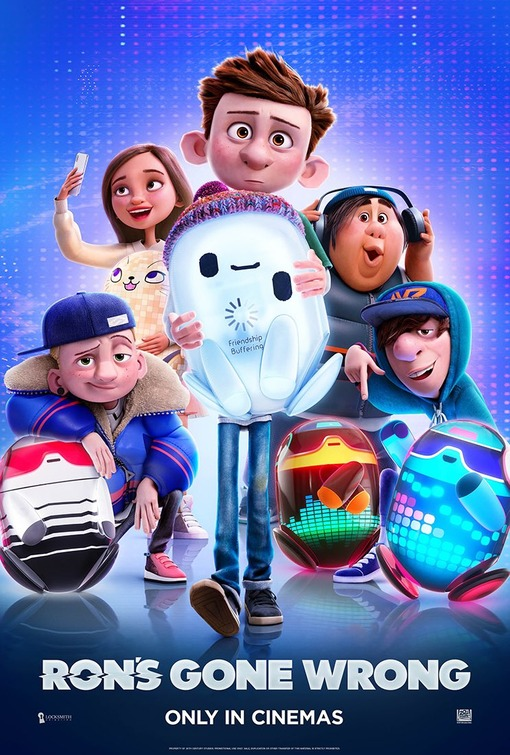

Director:Sarah Smith, Jean-Philippe Vine, Octavio E. Rodriguez
Screenplay: Peter Baynham, Sarah Smith
Release Date:22 October
Runtime:106 min
Synopsis: Walking, talking, digitally-connected bots have become childrenʼs best friends, and 11-year-old Barney, a socially-awkward middle-schooler
struggling in the social media age, gets a new digital friend: “Ron.” But soon Ronʼs malfunctions cause hilarious results and an adventure that proves that friendship can be messy!